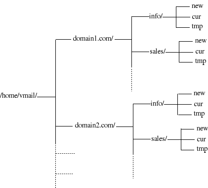

Introduction
In this setup is for a small to medium sized email server with Postfix virtual mailboxes which can be used for multiple domains and non-Linux accounts. If you are new to Postfix please read PostfixBasicSetupHowto to understand the basics before proceeding with this Howto. Also, information is presented about integration with ClamSMTP (an SMTP filter for Postfix) and other mail servers that check for viruses (using the ClamAV anti-virus software).
Example Setup
In this example emails are hosted for two separate domains, domain1.com and domain2.com. (Replace these with your own domain names.)
Install Postfix
Install the postfix package.
For convenience in testing mail delivery, also install mailx package for use as command line mail utility program. (mailx is a dummy package for one of three mail programs, the most widely used of which is bsd-mailx.)
Set Postfix Support for Maildir style Mailboxes
Maildir is an e-mail spool format that does not require file-locking to maintain message integrity because the messages are kept in separate files with unique names. A Maildir is a directory (often named Maildir) with three subdirectories named tmp, new, and cur. The subdirectories should all reside on the same filesystem.
Please find out more about Maildir here.
sudo vi /etc/postfix/main.cf
Add the following code segment:
home_mailbox = Maildir/
Comment the line mailbox_command = procmail -a "$EXTENSION". It will not be used.
Restart Postfix to effect the changes.
sudo /etc/init.d/postfix restart
Postfix virtual Mailboxes for separate domains and Non-Linux accounts
As a system hosts more and more domains and users, it becomes less desirable to give every user their own Linux system account.
With the Postfix virtual mailbox delivery agent, every recipient address can have its own virtual mailbox. Unlike virtual alias domains, virtual mailbox domains do not need the translation from each recipient addresses into a different address, and owners of a virtual mailbox address do not need to have a Linux system account.
The Postfix virtual mailbox delivery agent looks up the user mailbox pathname, uid and gid via separate tables that are searched with the recipient's mail address. Maildir style delivery is designated by terminating the mailbox pathname with a "/".
The following figure shows a directory structure for mailboxes.

It is best to transfer all domains into virtual mailboxes. Even if you have setup postfix with one domain, make that domain a virtual domain. You aren't required to do this, but doing it this will give you a well organized mail system from the outset. Having Postfix host one real domain and the rest virtual means that you will always need to configure Postfix twice: once for each type of domain.
Change the myhostname line in main.cf to read:
myhostname = localhost
Note: Using localhost as myhostname can cause problems since this variable is used in the EHLO message the server sends. If you are unable to send messages due to
550 Access denied - Invalid HELO name (See RFC2821 4.1.1.1) (in reply to MAIL FROM command))
then this is the cause.
Create a virtual Mailbox owner
In our setup all virtual mailboxes are owned by a fixed uid and gid 5000. (If this is not what you want, specify lookup tables that are searched by the recipient's mail address.)
To create a virtual mailbox group:
sudo groupadd -g 5000 vmail
To create a virtual mailbox owner:
sudo useradd -m -u 5000 -g 5000 -s /bin/bash vmail
Edit main.cf
sudo vi /etc/postfix/main.cf
Set up Postfix to use virtual mailboxes
Add the following code segment to main.cf
virtual_mailbox_domains = /etc/postfix/vhosts virtual_mailbox_base = /home/vmail virtual_mailbox_maps = hash:/etc/postfix/vmaps virtual_minimum_uid = 1000 virtual_uid_maps = static:5000 virtual_gid_maps = static:5000
In the first line is used a text file called vhosts. (You can name this anything you want.) Inside this text file will be a simple one-column list of all the domains you are hosting. Add your domains there.
sudo vi /etc/postfix/vhosts
Obviously, use your own domain names instead of the domain examples:
domain1.com domain2.com
The next line virtual_mailbox_base specifies the base directory where the mail will be stored. (Again, you can choose anything you want.) In our case it will be the '''vmail''' subdirectory of the owner's home directory /home/vmail
The third line points to a text file named '''vmaps'''. This is a two column text file. The first column specifies a virtual email address. The second column specifies the person's mailbox location. Just like with real domain hosting, if you specify a / at the end of the location, it designates a Maildir format. (If not, it is mbox.) In this Howto we are using the Maildir format.
Setup this file:
sudo vi /etc/postfix/vmaps
The format should look like:
info@domain1.com domain1.com/info/ alias@domain1.com domain1.com/info/ sales@domain1.com domain1.com/sales/ info@domain2.com domain2.com/info/ sales@domain2.com domain2.com/sales/
Note: To make an alias, map to same folder as another user.
Convert vmaps into a hash file by running:
sudo postmap /etc/postfix/vmaps
Remember to execute the above command every time when you add a new map.
Restart Postfix to make the changes take effect.
sudo /etc/init.d/postfix restart
My example config now looks like:
smtpd_banner = $myhostname ESMTP $mail_name (Ubuntu/GNU) biff = no # appending .domain is the MUA's job. append_dot_mydomain = no # Uncomment the next line to generate "delayed mail" warnings #delay_warning_time = 4h myhostname = localhost alias_maps = hash:/etc/aliases alias_database = hash:/etc/aliases myorigin = $myhostname mynetworks = 127.0.0.0/8, 10.0.0.0/24 mailbox_size_limit = 0 home_mailbox = Maildir/ virtual_mailbox_domains = /etc/postfix/vhosts virtual_mailbox_base = /home/vmail virtual_mailbox_maps = hash:/etc/postfix/vmaps virtual_minimum_uid = 1000 virtual_uid_maps = static:5000 virtual_gid_maps = static:5000 recipient_delimiter = + inet_interfaces = all
Test virtual mailbox setup
The directory structure for a particular user is created when he gets his first mail.
Send a mail to info@domain1.com
In a terminal you can type:
mail info@domain1.com
Check the mailbox
cd /home/vmail/domain1/info/new ls
You should see a mail file there. If so, you've done it!
Set up non-Linux accounts
There are several popular techniques to do this using services such as OpenLDAP or MySQL and mixing them with Courier IMAP. We won't be using those. Instead, we're going to use something simpler: plain text files.
We'll accomplish this with Dovecot. Dovecot is lightweight, flexible, and secure.
The following command installs Dovecot but removes Courier IMAP/POP3 (if you have already have them installed).
Install Dovecot IMAP/POP3 server
Install the packages: dovecot-common dovecot-imapd dovecot-pop3d
Configure Dovecot
You need to set up Dovecot to work with our setup. It is best to backup your original dovecot config file and create a new one (based on a copy of the file here).
Backup the original config file:
sudo mv /etc/dovecot/dovecot.conf /etc/dovecot/dovecot.conf.orig
Create a new config file and copy the new config file into it:
sudo vi /etc/dovecot/dovecot.conf
Copy into the file:
base_dir = /var/run/dovecot/
protocols = imap pop3
disable_plaintext_auth = yes
shutdown_clients = yes
log_path = /var/log/dovecot
info_log_path = /var/log/dovecot.info
log_timestamp = "%Y-%m-%d %H:%M:%S "
ssl = no
#In Ubuntu 10.04 Lucid Lynx: ssl = no
login_dir = /var/run/dovecot/login
login_chroot = yes
login_user = dovecot
login_greeting = Dovecot ready.
mail_location = maildir:/home/vmail/%d/%n
mmap_disable = no
valid_chroot_dirs = /var/spool/vmail
protocol imap {
login_executable = /usr/lib/dovecot/imap-login
mail_executable = /usr/lib/dovecot/imap
}
protocol pop3 {
login_executable = /usr/lib/dovecot/pop3-login
mail_executable = /usr/lib/dovecot/pop3
pop3_uidl_format = %08Xu%08Xv
}
auth_executable = /usr/lib/dovecot/dovecot-auth
auth_verbose = yes
auth default {
mechanisms = plain cram-md5
passdb passwd-file {
args = /etc/dovecot/passwd
}
userdb passwd-file {
args = /etc/dovecot/users
}
user = root
}Note: If you are using/testing with Dapper Drake (Ubuntu 6.06), please use the Dovecot config file for Dapper instead.
Several of the config lines require explanation.
The line "mail_location = maildir:/home/vmail/%d/%n" is particularly important. In our virtual hosting set up, the way we distinguish one user from another is to have them log in with their full email address. For example, when the email account is "info@domain1.com", Dovecot does some guessing on its end about your user name. If it just sees something like "info", it sets a variable called "%n"to "info". If it sees "info@domain1.com", it will split it up and set "%d" to domain1.com and "%n" to "info". Using that paradigm, if we replace the variables in this line , we get something like: maildir:/home/vmail/domain1.com/info
The lines "args = /etc/dovecot/passwd" and "args = /etc/dovecot/users" are similar to the /etc/passwd and /etc/shadow system files.
The format of these files is similar to this:
::
/etc/dovecot/users: info@domain1.com::5000:5000::/home/vmail/domain1.com/:/bin/false::
/etc/dovecot/passwd: info@domain1.com:$1$G/FqlOG5$Vj0xmc9fKY.UVr8OWr/7C1
The 5000:5000 corresponds to the uid and gid of the "virtual" called vmail (which owns all the mailboxes in the system). The home directory includes everything but the word before the @ in the email address.
Note: It is possible to use a single file for the user/passwd with the following format:
/etc/dovecot/passwd: info@domain1.com:$1$G/FqlOG5$Vj0xmc9fKY.UVr8OWr/7C1:5000:5000::/home/vmail/domain1.com/:/bin/false::
Create Dovecot Users
There are no commands like useradd and passwd to add users and passwords for our mail system. A bash script provides a small and quick solution.
Files:
/etc/dovecot/users - Similar to /etc/passwd
/etc/dovecot/passwd - Similar to /etc/shadow
/etc/postfix/vmaps - Map virtual users to mail directory (for postfix). If changes are made, use postmap /etc/postfix/vmaps && service postfix reload.
Scripts to Add and Delete Users
Create file:
sudo vi /usr/local/sbin/adddovecotuser
Add the following code segment and save the file:
#!/bin/sh
if [ ! $# = 1 ]
then
echo "Usage: $0 username@domain"
exit 1
else
user=`echo "$1" | cut -f1 -d "@"`
domain=`echo "$1" | cut -s -f2 -d "@"`
if [ -x $domain ]
then
echo "No domain given\nUsage: $0 username@domain"
exit 2
fi
echo "Adding user $user@$domain to /etc/dovecot/users"
echo "$user@$domain::5000:5000::/home/vmail/$domain/$user/:/bin/false::" >> /etc/dovecot/users
# Create the needed Maildir directories
echo "Creating user directory /home/vmail/$domain/$user"
# maildirmake.dovecot does only chown on user directory, we'll create domain directory instead
if [ ! -x /home/vmail/$domain ]
then
mkdir /home/vmail/$domain
chown 5000:5000 /home/vmail/$domain
chmod 700 /home/vmail/$domain
fi
/usr/bin/maildirmake.dovecot /home/vmail/$domain/$user 5000:5000
# Also make folders for Drafts, Sent, Junk and Trash
/usr/bin/maildirmake.dovecot /home/vmail/$domain/$user/.Drafts 5000:5000
/usr/bin/maildirmake.dovecot /home/vmail/$domain/$user/.Sent 5000:5000
/usr/bin/maildirmake.dovecot /home/vmail/$domain/$user/.Junk 5000:5000
/usr/bin/maildirmake.dovecot /home/vmail/$domain/$user/.Trash 5000:5000
# To add user to Postfix virtual map file and relode Postfix
echo "Adding user to /etc/postfix/vmaps"
echo $1 $domain/$user/ >> /etc/postfix/vmaps
postmap /etc/postfix/vmaps
postfix reload
fi
echo "\nCreate a password for the new email user"
passwd=`dovecotpw`
echo "Adding password for $user@$domain to /etc/dovecot/passwd"
if [ ! -x /etc/dovecot/passwd ]
then
touch /etc/dovecot/passwd
chmod 640 /etc/dovecot/passwd
fi
echo "$user@$domain:$passwd" >> /etc/dovecot/passwd
exit 0Make the file executable:
sudo chmod +x /usr/local/sbin/adddovecotuser
Add a user like this:
sudo adddovecotuser info@domain1.com
We'll create one for deleting users too:
sudo vi /usr/local/sbin/deldovecotuser
Add the following code segment and save the file:
#!/bin/bash
#
# deldovecotuser - for deleting virtual dovecot users
#
if [ ! $# = 1 ]
then
echo -e "Usage: $0 username@domain"
exit 1
else
user=`echo "$1" | cut -f1 -d "@"`
domain=`echo "$1" | cut -s -f2 -d "@"`
if [ -x $domain ]
then
echo -e "No domain given\nUsage: $0 username@domain: "
exit 2
fi
fi
read -n 1 -p "Delete user $user@$domain from dovecot? [Y/N]? "
echo
case $REPLY in
y | Y)
new_users=`grep -v $user@$domain /etc/dovecot/users`
new_passwd=`grep -v $user@$domain /etc/dovecot/passwd`
new_vmaps=`grep -v $user@$domain /etc/postfix/vmaps`
echo "Deleting $user@$domain from /etc/dovecot/users"
echo "$new_users" > /etc/dovecot/users
echo "Deleting $user@$domain from /etc/dovecot/passwd"
echo "$new_passwd" > /etc/dovecot/passwd
echo "Deleting $user@$domain from /etc/postfix/vmaps"
echo "$new_vmaps" > /etc/postfix/vmaps
postmap /etc/postfix/vmaps
postfix reload
read -n1 -p "Delete all files in /home/vmail/$domain/$user? [Y/N]? " DELETE
echo
case $DELETE in
y | Y)
echo "Deleting files in /home/vmail/$domain/$user"
rm -fr /home/vmail/$domain/$user
;;
* )
echo "Not deleting files in /home/vmail/$domain/$user"
;;
esac
;;
* )
echo "Aborting..."
;;
esacMake the file executable:
sudo chmod +x /usr/local/sbin/deldovecotuser
Delete a user like this:
sudo deldovecotuser info@domain1.com
To start Devecot for the first time
sudo /etc/init.d/dovecot start
C#/Mono Application to Add Users
An alternative to the scripts below for adding users and creating passwords, there is an Open Source tool written in C# and compiles in Mono to do this same task. It offers a few more error checks and prompts. It incorporates the scripts into one tool for Postfix and Dovecot. You can find it here
Postfix SASL
If you would like your mail users to authenticate to Postfix too, we need to configure Postfix for SASL. In that way, the mail server can relay email from users not in local network.
Make Dovecot listen for authentication requests
In /etc/dovecot/dovecot.conf edit the auth section to:
auth default {
mechanisms = plain cram-md5
passdb passwd-file {
args = /etc/dovecot/passwd
}
userdb passwd-file {
args = /etc/dovecot/users
}
user = root
socket listen {
client {
# The client socket is generally safe to export to everyone. Typical use
# is to export it to your SMTP server so it can do SMTP AUTH lookups
# using it.
path = /var/spool/postfix/private/auth-client
mode = 0660
user = postfix
group = postfix
}
}
}Restart dovecot.
sudo service dovecot restart
Configure Postfix for SASL
Configure Postfix SASL.
sudo postconf -e 'smtpd_sasl_auth_enable = yes' sudo postconf -e 'smtpd_sasl_security_options = noplaintext,noanonymous' sudo postconf -e 'smtpd_recipient_restrictions = permit_sasl_authenticated,permit_mynetworks,reject_unauth_destination' sudo postconf -e 'smtpd_sasl_type = dovecot' sudo postconf -e 'smtpd_sasl_path = private/auth-client' sudo echo "mech_list: cram-md5" > /etc/postfix/sasl/smtpd.conf
Restart Postfix.
sudo service postfix restart
Test the Setup
With mutt
Type in a terminal:
mutt -f pop://mail.domain1.com
or:
mutt -f imap://mail.domain1.com
Input your user name and password as requested. When logged in, shortcuts are displayed in top of window. Press q to quit.
Tip1: If your DNS lookup doesn't work yet, you can use mutt -f pop://localhost when on server.
Tip2: You can use auth_default_realm = domain1.com in dovecot.conf and omit @domain1.com in your user name when logging in.
With telnet
Telnet is more verbose. Type in a terminal:
telnet localhost 110
Note: This only works when traffic is local, since we have set disable_plaintext_auth = yes.
Type the following code segment in the prompt provided by the Dovecot POP3 server
user info@domain1.com pass password quit
Final output should be something like this
Trying 127.0.0.1... Connected to mail.domain1.com. Escape character is '^]'. +OK dovecot ready. user info@domain1.com +OK pass password +OK Logged in. quit +OK Logging out.
ClamSMTP SMTP Virus Filter
ClamSMTP is an SMTP filter that allows you to check for viruses using the ClamAV anti-virus software. It accepts SMTP connections and forwards the SMTP commands and responses to another SMTP server. The 'DATA' email body is intercepted and scanned before forwarding.
ClamSMTP aims to be lightweight, reliable, and simple rather than have a myriad of options. It's written in C without major dependencies.
ClamSMTP can also be used as a transparent proxy to filter an entire network's SMTP traffic at the router.
Installing ClamAV
We need ClamAV daemon to work with ClamSMTP. Let's install ClamAV first, with the following packages: clamav-daemon clamav
Installing ClamSMTP
You need to install the clamsmtp package.
Set Postfix to use ClamSMTP
Postfix supports filtering mail through a filter that acts like an SMTP server. Put the following lines in your Postfix main.cf file:
Open the file:
sudo vi /etc/postfix/main.cf
If you have doubt where to add the codes look at my example main.cf file
Add the codes:
content_filter = scan:127.0.0.1:10026 receive_override_options = no_address_mappings
The content_filter tells Postfix to send all mail through the service called 'scan' on port 10026. We'll set up clamsmtpd to listen on this port later.
Next we add the following to the Postfix master.cf file:
Open the file:
sudo vi /etc/postfix/master.cf
If you have doubt where to add the codes look at my example master.cf file
Add the codes:
# AV scan filter (used by content_filter)
scan unix - - n - 16 smtp
-o smtp_send_xforward_command=yes
# For injecting mail back into postfix from the filter
127.0.0.1:10025 inet n - n - 16 smtpd
-o content_filter=
-o receive_override_options=no_unknown_recipient_checks,no_header_body_checks
-o smtpd_helo_restrictions=
-o smtpd_client_restrictions=
-o smtpd_sender_restrictions=
-o smtpd_recipient_restrictions=permit_mynetworks,reject
-o mynetworks_style=host
-o smtpd_authorized_xforward_hosts=127.0.0.0/8Make sure there's no spaces around the equal signs or commas in the text you added. Best way is to copy and my codes here.
The first 2 lines create the scan service. The rest set up a service for accepting mail back into postfix. All the options prevent a mail loop as well as relax address checking and the like, since that's already been done.
Make sure to run it as the same user as you run clamd or they'll have problems accessing each other's temporary files. You can use the the following accomplish that.
sudo adduser clamsmtp clamav
Restart Postfix, ClamSMTP, and ClamAV Daemon to make your changes effect:
sudo /etc/init.d/postfix restart sudo /etc/init.d/clamsmtp restart sudo /etc/init.d/clamav-daemon restart
Test ClamSMTP for outgoing mail
We need to test the our outgoing mail for viruses. Best way is to download eicar test virus and attach to a mail and send. Let's do it.
Download eicar to you home directory:
wget http://eicar.org/download/eicar_com.zip
Send this file as an attachment to info@domain1.com
Then check your mail.log file:
tail /var/log/mail.log
You should see something like in your log file.
Mar 8 17:12:02 localhost clamsmtpd: 100004: from=info@domain1.com, to=info@domain1.com, status=VIRUS:Eicar-Test-Signature Mar 8 17:12:02 localhost postfix/smtp[15634]: 4A6C852110: to=<info@domain1.com>, relay=127.0.0.1[127.0.0.1], delay=0, status=sent (250 Virus Detected; Discarded Email)
Test ClamSMTP for incoming Mail from the Internet
If you have a production mail server you can check your mail server for viruses provided by webmail.us. They are sending you harmless test mails with the EICAR virus test signature. Also you can use GFI Security Labs for further testing.
Final thoughts
This setup can handle thousands of account without performance issue. It is an extensible, scalable, and robust alternative to a MySQL/PostgreSQL database backend for users, using web-based virtual domain management and password modifications by users.
Yet another long-winded poorly written howto by: ChinthakaDeshapriya.
(Small addition for C# tool)